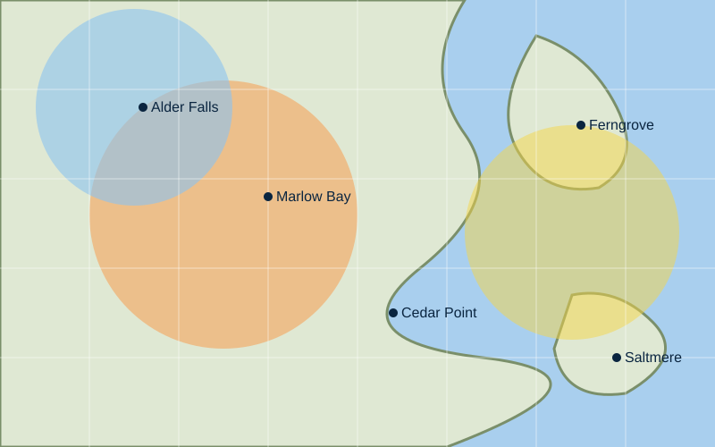
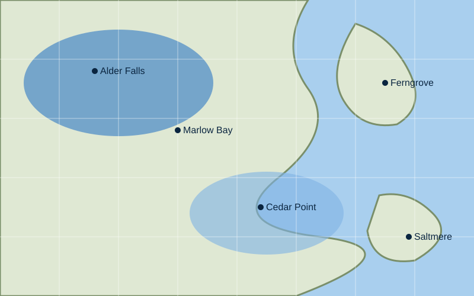
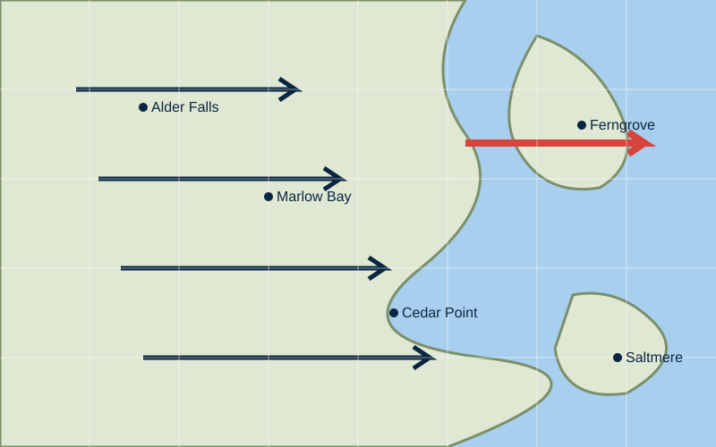
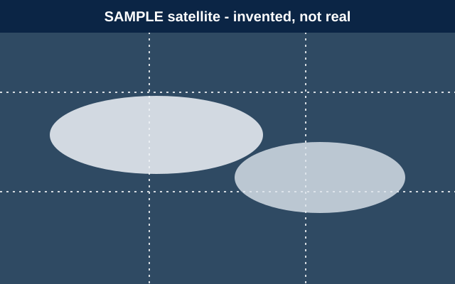

Weather Maps
Four placeholder maps of the fictional region. They are illustrations, not data.
Choose a map

- Below 40°F
- 40 to 50°F
- Above 50°F

- Under 0.25 in
- 0.25 to 1 in
- Over 1 in

- Under 10 mph
- 10 to 25 mph
- Over 25 mph

- Clear
- Thin cloud
- Thick cloud